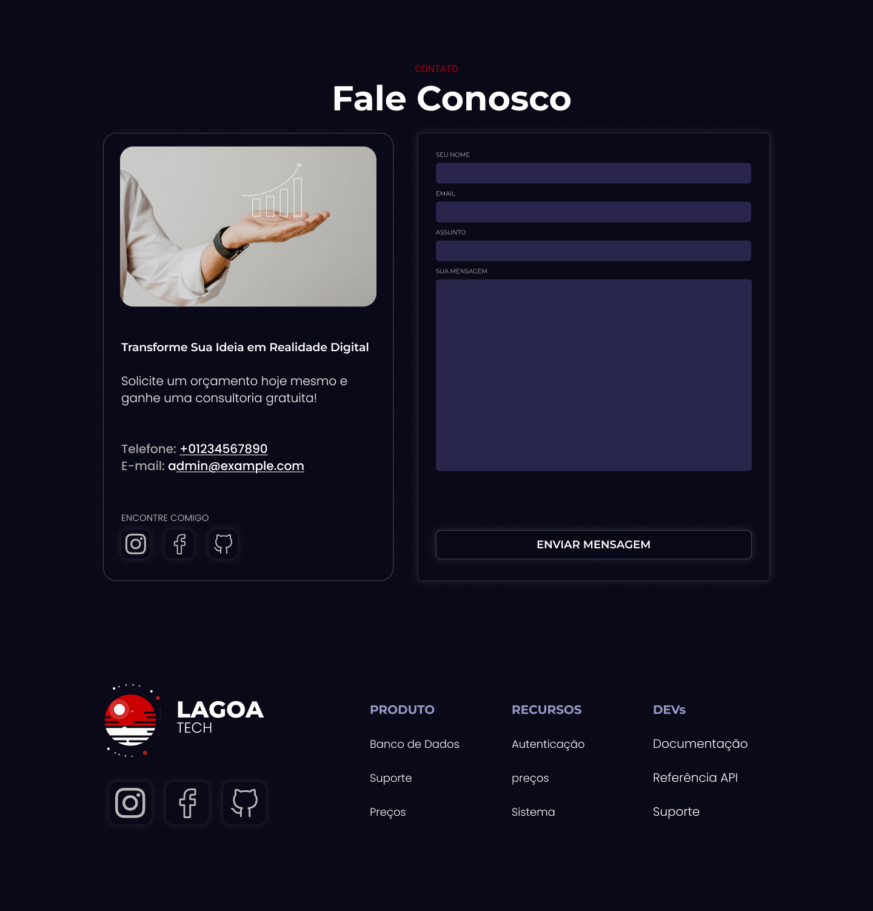
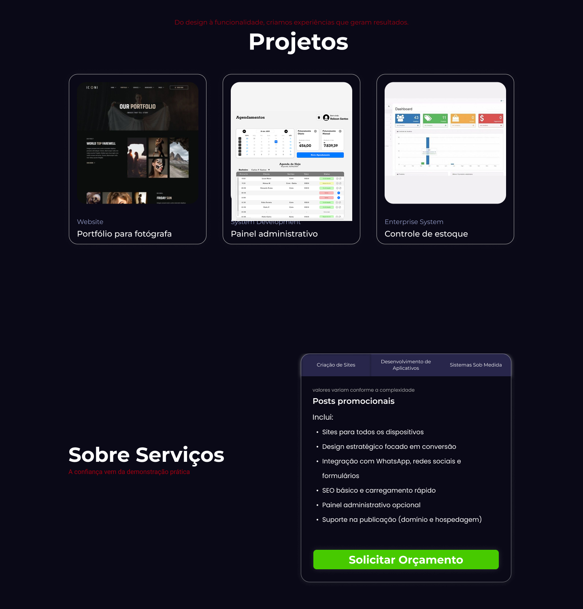
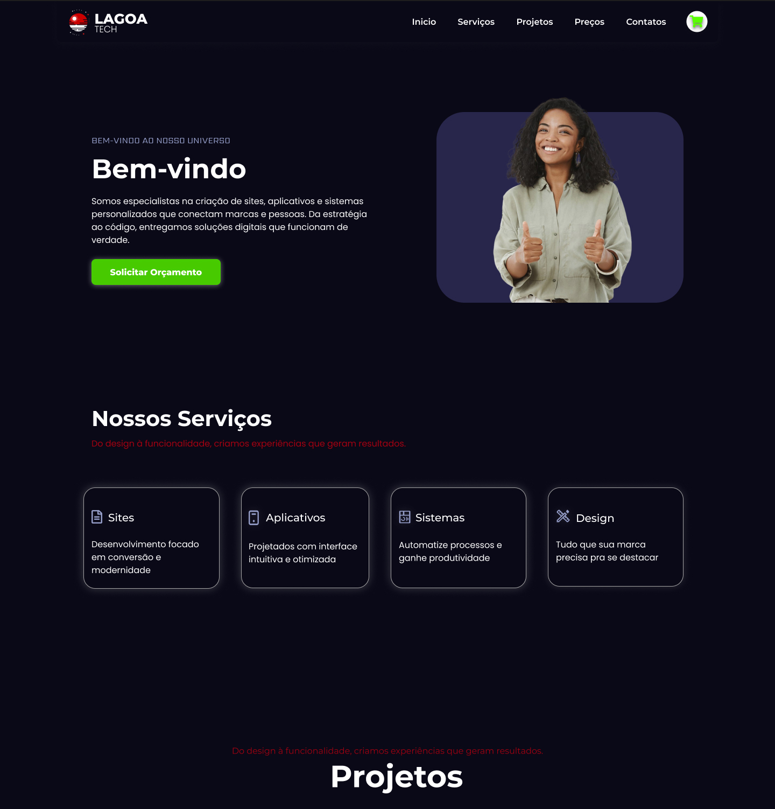

Lagoa Tech
Projeto de UX/UI e Design Gráfico focado na estruturação de um fluxo digital completo, desde o onboarding até a validação final. O objetivo foi transformar ideias iniciais em um produto organizado, validado e pronto para desenvolvimento.
Meu papel: UX Designer, UI Designer e responsável pelo fluxo de produto
Contexto
A Lagoa Tech precisava estruturar o início do desenvolvimento de um produto digital, organizando ideias, alinhando expectativas e criando uma base sólida para execução.
O desafio era transformar um cenário inicial pouco definido em um fluxo claro, compreensível e viável para design e desenvolvimento.
Processo
1. Onboarding e Alinhamento
Estruturei um fluxo de onboarding com briefing digital e reunião inicial, garantindo entendimento claro dos objetivos, necessidades e limitações do projeto.
2. Estruturação da Experiência
Transformei as informações coletadas em wireframes funcionais no Figma, priorizando usabilidade, clareza de navegação e organização lógica das telas.
3. Validação Contínua
Realizei validações constantes com o cliente e equipe técnica, garantindo alinhamento entre design, viabilidade técnica e objetivos do produto.
Resultado
O projeto resultou em um fluxo bem estruturado, com comunicação clara entre design e desenvolvimento, reduzindo retrabalho e acelerando o processo de entrega.
A organização das etapas permitiu maior previsibilidade no desenvolvimento e uma base sólida para evolução futura do produto.
Diferencial
O principal diferencial do projeto foi a estruturação do processo desde o início, garantindo que decisões de design fossem tomadas com base em alinhamento estratégico e não apenas em estética.
Isso reduziu incertezas e criou uma ponte eficiente entre ideia, design e desenvolvimento.
Interface e Processo


